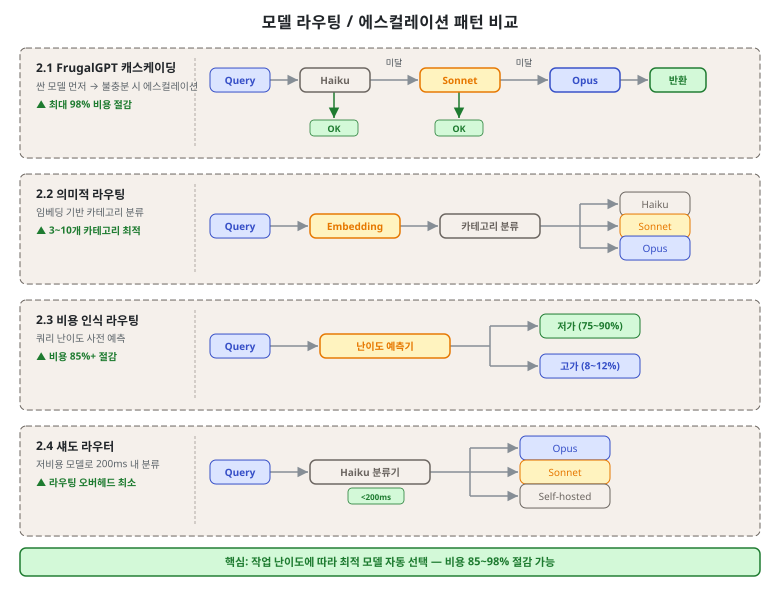
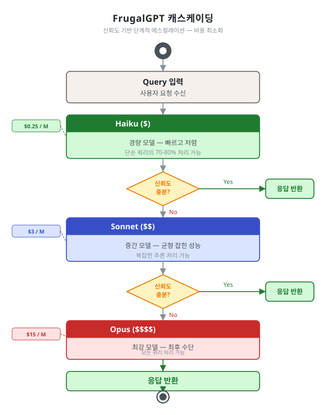
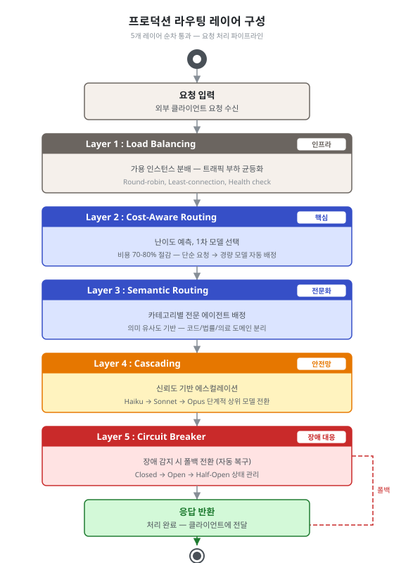

제5단원. 모델 라우팅 패턴 — 비용과 품질의 균형¶
학습 목표¶
이 단원을 마치면 다음을 할 수 있다:
- 4가지 핵심 모델 라우팅 패턴(캐스케이딩, 의미적, 비용 인식, 섀도)을 설명할 수 있다
- 프로덕션 환경에서 라우팅 레이어를 설계할 수 있다
- 비용 절감 효과를 정량적으로 분석할 수 있다
- FrugalGPT의 신뢰도 평가 방법을 구현 수준에서 이해할 수 있다

모델 라우팅은 멀티에이전트 시스템의 경제성을 결정하는 핵심 패턴이다. 모든 작업에 최고급 모델을 사용하면 최고의 품질을 얻지만, 비용이 비현실적으로 증가한다. 작업 특성에 맞는 모델을 선택하면, 품질을 유지하면서 비용을 대폭 절감할 수 있다.
모델 라우팅의 근본적 동기는 다음 수치에 있다:
GPT-4 성능의 95%를 유지하면서 비용 85% 이상 절감 가능 — 비용 인식 라우팅 연구 종합 (2024)
이 목표를 달성하기 위한 4가지 핵심 패턴을 이 단원에서 다룬다.
5.1 FrugalGPT 캐스케이딩¶
개념¶
싼 모델부터 시작하여, 응답 신뢰도가 낮으면 다음 티어 모델로 에스컬레이션한다.
Query ──▶ Haiku ──▶ 신뢰도 평가 ──▶ 충분? ──Yes──▶ 반환
│
No
▼
Sonnet ──▶ 신뢰도 평가 ──▶ 충분? ──Yes──▶ 반환
│
No
▼
Opus ──▶ 반환

성능 수치¶
- GPT-4 수준 성능을 유지하면서 최대 98% 비용 절감
- 동일 비용으로 정확도 4% 향상
신뢰도 평가 방법 상세¶
FrugalGPT 캐스케이딩의 핵심은 각 단계에서 "이 응답으로 충분한가"를 판단하는 신뢰도 평가이다. 세 가지 방법이 있으며, 각각 작동 원리가 다르다.
| 방법 | 정확도 | 지연 | 비용 |
|---|---|---|---|
| DistilBERT 기반 스코어링 | 높음 | 낮음 | 매우 낮음 |
| 자기 일관성 샘플링(AutoMix) | 높음 | 중간 | 낮음 |
| Hidden-state 프로브 | 최고 | 낮음 | 매우 낮음 |
1. DistilBERT 기반 스코어링
응답과 쿼리를 DistilBERT로 임베딩하여 의미적 일치도를 계산한다. 모델 응답이 쿼리의 핵심 요소를 커버하는지 측정하는 방식이다. 별도 LLM 호출 없이 경량 분류기만 사용하므로 지연이 매우 낮다.
from transformers import DistilBertTokenizer, DistilBertModel
import torch
class DistilBERTScorer:
def __init__(self):
self.tokenizer = DistilBertTokenizer.from_pretrained('distilbert-base-uncased')
self.model = DistilBertModel.from_pretrained('distilbert-base-uncased')
# 신뢰도 임계값 분류기 (파인튜닝 필요)
self.classifier = torch.nn.Linear(768, 1)
def score(self, query: str, response: str) -> float:
"""응답의 신뢰도 점수 반환 (0.0~1.0)"""
inputs = self.tokenizer(
query + " [SEP] " + response,
return_tensors="pt", truncation=True, max_length=512
)
with torch.no_grad():
outputs = self.model(**inputs)
pooled = outputs.last_hidden_state[:, 0, :] # [CLS] 토큰
score = torch.sigmoid(self.classifier(pooled)).item()
return score
2. AutoMix의 자기 일관성 샘플링
동일한 쿼리를 N회(보통 3~5회) 샘플링하여 응답의 일관성을 측정한다. 응답들이 서로 높은 유사도를 보이면 모델이 확신하는 것으로 간주한다. 응답이 다양하게 분산되면 불확실한 것으로 판단하여 상위 모델로 에스컬레이션한다.
import numpy as np
from sklearn.metrics.pairwise import cosine_similarity
class AutoMixConsistencyChecker:
def __init__(self, n_samples: int = 5):
self.n_samples = n_samples
def check_consistency(self, model, query: str) -> float:
"""자기 일관성 기반 신뢰도 측정"""
responses = [
model.generate(query, temperature=0.7)
for _ in range(self.n_samples)
]
# 응답들을 임베딩하여 유사도 행렬 계산
embeddings = [embed(r) for r in responses]
sim_matrix = cosine_similarity(embeddings)
# 대각선 제외 평균 유사도 = 일관성 점수
mask = np.ones_like(sim_matrix) - np.eye(len(sim_matrix))
consistency = (sim_matrix * mask).sum() / mask.sum()
return consistency # 0.8 이상이면 충분히 일관적
def should_escalate(self, model, query: str,
threshold: float = 0.75) -> bool:
consistency = self.check_consistency(model, query)
return consistency < threshold
AutoMix의 장점은 응답 내용을 직접 평가하는 것이 아니라, 모델의 내부 확신도를 간접적으로 측정한다는 점이다. 모델이 확신하는 질문에는 일관된 답을 주고, 불확실한 질문에는 다양한 답을 준다는 경험적 관찰에 기반한다.
3. Hidden-state 프로브
LLM의 중간 레이어(hidden state)에 경량 분류기를 연결하여, 모델이 응답을 생성하는 과정에서 내부 불확실성을 직접 측정한다. DistilBERT보다 정확하지만 모델 내부 접근이 필요하다.
주의: Judge 신뢰도가 80% 미만이면 성능이 급격히 저하된다 — judge 품질이 전체 시스템 성능의 핵심이다.
실전 적용¶
OMC의 Ecomode가 이 패턴을 구현한다:
사용자 입력
│
▼
복잡도 평가
│
├── Low → Haiku (기본)
├── Med → Sonnet (필요시)
└── High → Opus (최후 수단)
│
▼
결과 품질 검사
│
├── Pass → 완료 (토큰 절감 보고)
└── Fail → 상위 모델로 에스컬레이션
5.2 의미적 라우팅 (Semantic Routing)¶
개념¶
쿼리를 임베딩 기반 유사도로 분류하여 적합한 모델/에이전트에 배정한다.
임베딩 기반 라우팅 Python 구현¶
import numpy as np
from sklearn.metrics.pairwise import cosine_similarity
class SemanticRouter:
def __init__(self):
# 카테고리별 예시 쿼리 (사전 임베딩)
self.categories = {
"simple_lookup": {
"examples": [
"파일 목록 조회",
"변수명 검색",
"코드에서 함수 찾기"
],
"model": "haiku"
},
"code_analysis": {
"examples": [
"이 함수의 실행 흐름을 분석하라",
"버그의 근본 원인을 찾아라",
"성능 병목 지점을 식별하라"
],
"model": "sonnet"
},
"architecture_decision": {
"examples": [
"이 시스템의 확장 전략을 설계하라",
"마이크로서비스 분리 기준을 결정하라",
"데이터베이스 선택 근거를 분석하라"
],
"model": "opus"
}
}
# 초기화 시 카테고리 예시를 임베딩
self.category_embeddings = self._precompute_embeddings()
def _precompute_embeddings(self):
result = {}
for cat_name, cat_data in self.categories.items():
embeddings = [embed(ex) for ex in cat_data["examples"]]
result[cat_name] = {
"centroid": np.mean(embeddings, axis=0),
"model": cat_data["model"]
}
return result
def route(self, query: str) -> str:
query_embedding = embed(query)
# 각 카테고리 중심과의 유사도 계산
similarities = {
cat: cosine_similarity(
[query_embedding],
[data["centroid"]]
)[0][0]
for cat, data in self.category_embeddings.items()
}
# 가장 유사한 카테고리 선택
best_category = max(similarities, key=similarities.get)
best_score = similarities[best_category]
# 신뢰도가 낮으면 기본 모델로 폴백
if best_score < 0.7:
return "sonnet" # 불확실한 경우 중간 모델
return self.category_embeddings[best_category]["model"]
적용 지침¶
- 3~10개 카테고리로 분류할 때 가장 효과적이다
- 카테고리 경계가 모호한 작업에서 오분류 위험이 있다
- 유사도 임계값(보통 0.7~0.8)을 넘지 못하면 중간 모델로 폴백하는 안전장치가 필요하다
실전 도구의 적용¶
OMC의 3티어 라우팅 시스템이 의미적 라우팅을 구현한다:
| 태스크 유형 | 라우팅 | 대표 에이전트 |
|---|---|---|
| 아키텍처 설계, 복잡한 알고리즘 | Opus | architect, planner, critic |
| 코드 구현, 테스트, 디버깅 | Sonnet | executor, debugger, verifier |
| 코드 탐색, Git 작업, 포맷팅 | Haiku | explore, git-master, formatter |
5.3 비용 인식 라우팅 (Cost-Aware Routing)¶
개념¶
쿼리 난이도를 사전 예측하여 가장 비용 효율적인 모델에 배정한다.
실무 사례¶
고객 지원 플랫폼에서의 실제 비용 절감 사례:
변경 전: 모든 쿼리에 Opus/GPT-4 사용
월 비용: $42,000
변경 후: 비용 인식 라우팅 적용
단순 쿼리 (75~90%): Haiku → $3,000
복잡 쿼리 (8~12%): Sonnet → $5,000
고난이도 (2~5%): Opus → $10,000
월 비용: $18,000
절감: $24,000/월 (57% 절감)
교차 참조: 이 사례의 상세한 비용 분석과 비용 절감 원칙은 1단원 1.2.3 경제적 동기에서 다룬다. 이 단원에서는 라우팅 패턴 자체에 집중한다.
일반적 쿼리 분포¶
쿼리 난이도 분포:
단순 (저가 모델) ████████████████████████████████████████ 75~90%
복잡 (중급 모델) ████████ 8~12%
고난이도 (프론티어) ████ 2~5%
난이도 사전 예측 방법¶
비용 인식 라우팅의 핵심 도전은 실제 처리 전에 난이도를 정확히 예측하는 것이다:
class DifficultyPredictor:
# 규칙 기반 특징
SIMPLE_INDICATORS = [
lambda q: len(q.split()) < 20, # 짧은 쿼리
lambda q: "?" not in q, # 명령형 (서술 아님)
lambda q: any(w in q for w in ["목록", "찾아", "검색", "조회"])
]
COMPLEX_INDICATORS = [
lambda q: len(q.split()) > 100, # 긴 쿼리
lambda q: "분석" in q or "설계" in q,
lambda q: "왜" in q or "원인" in q, # 인과 분석 요청
lambda q: q.count("\n") > 5 # 다중 요구사항
]
def predict(self, query: str) -> str:
simple_score = sum(1 for f in self.SIMPLE_INDICATORS if f(query))
complex_score = sum(1 for f in self.COMPLEX_INDICATORS if f(query))
if complex_score >= 2:
return "high" # Opus
elif simple_score >= 2:
return "low" # Haiku
else:
return "medium" # Sonnet
5.4 섀도 라우터 (Shadow Router)¶
개념¶
저비용 모델(Haiku/Flash-Lite)을 전용 분류기로 두어 200ms 이내에 라우팅을 결정한다.
장점¶
- 라우팅 오버헤드 최소화
- 메인 모델의 컨텍스트 낭비 방지
- 분류기가 실패해도 폴백 경로로 처리 가능
주의사항¶
분류기 자체의 정확도가 전체 시스템 성능을 좌우한다. 분류기의 오분류가 잦으면 캐스케이딩보다 성능이 나빠질 수 있다.
섀도 모드 운용¶
새 라우팅 규칙을 도입할 때 섀도 모드로 검증한다: 실제 라우팅은 기존 방식을 따르면서, 새 분류기의 결과를 기록하여 사후 분석한다.
class ShadowRouter:
def __init__(self, production_router, shadow_router):
self.production = production_router
self.shadow = shadow_router
self.shadow_log = []
def route(self, query: str) -> str:
prod_decision = self.production.route(query)
# 섀도 라우터는 실제로 사용하지 않고 기록만
shadow_decision = self.shadow.route(query)
self.shadow_log.append({
"query_hash": hash(query),
"prod": prod_decision,
"shadow": shadow_decision,
"match": prod_decision == shadow_decision
})
return prod_decision # 항상 기존 방식 사용
def get_agreement_rate(self) -> float:
if not self.shadow_log:
return 0.0
matches = sum(1 for e in self.shadow_log if e["match"])
return matches / len(self.shadow_log)
5.5 고급 라우팅 기법¶
학술 연구에서 제안된 추가적인 라우팅 기법들이다. 여기서는 실무적으로 중요한 두 가지를 상세히 설명한다.
난이도 인식 라우팅 (Difficulty-Aware Routing)¶
입력 난이도를 실시간으로 추정하여 모델 선택에 반영한다. 비용 인식 라우팅이 사전 정의된 규칙에 의존하는 반면, 난이도 인식 라우팅은 모델의 내부 상태(perplexity, entropy 등)를 활용한다.
핵심 아이디어: 모델이 입력 토큰을 처리할 때 생성하는 attention entropy가 높으면(불확실하면), 더 강력한 모델로 라우팅한다.
class DifficultyAwareRouter:
def __init__(self, weak_model, strong_model, threshold: float = 0.6):
self.weak = weak_model
self.strong = strong_model
self.threshold = threshold
def route(self, query: str) -> str:
# 약한 모델로 먼저 처리하고 내부 불확실성 측정
weak_response, uncertainty = self.weak.process_with_uncertainty(query)
if uncertainty > self.threshold:
# 불확실성이 높으면 강한 모델로 재처리
return "strong"
else:
return "weak"
출처: arxiv 2603.04445
불확실성 기반 라우팅 (Uncertainty-Based Routing)¶
모델의 예측 불확실성 추정치를 에스컬레이션 신호로 사용한다. AutoMix와 유사하지만, 다중 샘플링 대신 단일 forward pass에서 불확실성을 추정한다는 차이가 있다.
불확실성을 측정하는 두 가지 방법: 1. Entropy of output distribution: 다음 토큰 분포의 엔트로피가 높으면 불확실 2. Self-evaluated confidence: 모델에게 "이 답변에 얼마나 확신하는가?"를 직접 물어봄
두 번째 방법은 간단하지만, 모델이 자신의 불확실성을 정확히 평가하지 못하는 경향이 있어 (보통 과신) 첫 번째 방법보다 덜 신뢰할 수 있다.
출처: AutoMix (arxiv)
| 기법 | 핵심 아이디어 | 출처 |
|---|---|---|
| 난이도 인식 라우팅 | 입력 난이도를 실시간 추정하여 모델 선택 | arxiv 2603.04445 |
| 선호도 정렬 라우팅 | 사용자/태스크 선호에 맞는 모델 매칭 | Dynamic Model Routing Survey |
| 클러스터링 라우팅 | 쿼리를 클러스터링하여 클러스터별 최적 모델 배정 | Maxim AI |
| 강화학습 라우팅 | RL로 라우팅 정책을 온라인 학습 | arxiv 2603.04445 |
| 불확실성 기반 라우팅 | 모델의 불확실성 추정치로 에스컬레이션 결정 | AutoMix |
5.6 프로덕션 라우팅 레이어 구성¶
실무에서는 단일 라우팅 기법만 사용하는 것이 아니라, 여러 레이어를 조합한다:
Layer 1: Load Balancing (부하 분산)
│ → 가용한 인스턴스로 분배. rate limit 회피 및 가용성 확보
▼
Layer 2: Cost-Aware Routing (비용 인식)
│ → 난이도 예측으로 1차 모델 선택. 전체 비용의 70~80% 절감 기여
▼
Layer 3: Semantic Routing (의미적)
│ → 카테고리별 전문 에이전트 배정. 도메인 특화 처리
▼
Layer 4: Cascading (캐스케이딩)
│ → 신뢰도 기반 에스컬레이션. 품질 보증의 마지막 안전망
▼
Layer 5: Circuit Breaker (서킷 브레이커)
→ 장애 시 폴백 모델로 전환. [7단원 7.1](07_오류_처리_및_안전.md) 참조

각 레이어의 역할¶
Layer 1: Load Balancing 요청이 들어오면 가장 먼저 부하 분산 레이어가 처리한다. 현재 rate limit 상태, 모델 응답 지연, 인스턴스 가용성을 기준으로 분배한다. 이 레이어가 없으면 특정 모델 인스턴스에 과부하가 집중된다.
Layer 2: Cost-Aware Routing 가장 많은 비용 절감이 이 레이어에서 발생한다. 쿼리 특성 분석으로 Haiku/Sonnet/Opus를 1차 배정한다. 전체 라우팅 효과의 70~80%를 담당한다.
Layer 3: Semantic Routing Layer 2의 결과를 더 세분화한다. "Sonnet으로 처리하되, 보안 관련 작업이면 security-auditor 에이전트로 배정"하는 식이다. 도메인별 전문화를 가능하게 한다.
Layer 4: Cascading Layer 2~3의 초기 배정이 틀렸을 때의 안전망이다. 모델이 낮은 신뢰도 응답을 생성하면 자동으로 상위 모델로 에스컬레이션한다. 이 레이어가 없으면 잘못 라우팅된 요청이 그냥 처리된다.
Layer 5: Circuit Breaker 모델 장애 시 서비스 연속성을 보장한다. Opus 장애 시 Sonnet 폴백, 외부 API 장애 시 로컬 모델 폴백 등의 시나리오를 처리한다.
레이어별 구현 예시¶
class ProductionRoutingLayer:
def __init__(self):
self.load_balancer = LoadBalancer()
self.cost_router = DifficultyPredictor()
self.semantic_router = SemanticRouter()
self.cascade_router = AutoMixConsistencyChecker()
self.circuit_breaker = CircuitBreaker()
def route_and_execute(self, query: str) -> str:
# Layer 1: 부하 분산
target_instance = self.load_balancer.get_available_instance()
# Layer 2: 비용 인식 1차 배정
difficulty = self.cost_router.predict(query)
initial_model = {"low": "haiku", "medium": "sonnet", "high": "opus"}[difficulty]
# Layer 3: 의미적 세분화
category = self.semantic_router.route(query)
agent = self.select_agent(initial_model, category)
# Layer 5: 서킷 브레이커 확인
if self.circuit_breaker.is_open(agent):
agent = self.circuit_breaker.get_fallback(agent)
# 실행
response = agent.execute(query, instance=target_instance)
# Layer 4: 캐스케이딩 (사후 신뢰도 평가)
if self.cascade_router.should_escalate(agent.model, query):
escalated_agent = self.get_next_tier_agent(agent)
response = escalated_agent.execute(query)
return response
핵심 정리: 라우팅의 경제학
모델 라우팅의 핵심은 "파레토 법칙"에 있다: - 전체 쿼리의 75~90%는 가장 저렴한 모델로 처리 가능하다 - 8~12%만 중급 모델이 필요하다 - 2~5%만 최고급 모델이 필요하다
이 분포를 정확히 식별하는 것이 비용 최적화의 핵심이다. 라우팅 정확도가 10% 개선되면 전체 비용이 15~20% 추가 절감된다.
복습 질문¶
-
FrugalGPT 캐스케이딩에서 "judge 신뢰도가 80% 미만이면 성능이 급격히 저하된다"는 발견의 실무적 함의를 논하라.
-
AutoMix의 자기 일관성 샘플링이 신뢰도를 측정하는 원리를 설명하고, 이 방법의 한계를 2가지 서술하라.
-
의미적 라우팅과 비용 인식 라우팅의 차이점을 설명하고, 어떤 상황에서 각각을 사용하는 것이 적절한지 서술하라.
-
실무 사례에서 월 $42,000 → $18,000 비용 절감을 달성한 비용 인식 라우팅의 쿼리 분포를 분석하고, 유사한 환경에서 적용 시 고려해야 할 점을 논하라.
-
프로덕션 라우팅 레이어 5단계를 설명하고, 각 레이어가 담당하는 역할을 서술하라.
-
OMC의 3티어 모델 라우팅(Opus/Sonnet/Haiku)이 이 단원의 어떤 라우팅 패턴들을 조합하여 구현하는지 분석하라.
이전 단원: 제4단원. 작업 분해 패턴 | 다음 단원: 제6단원. 품질 보증 패턴